Savey
Rescue food, reduce waste
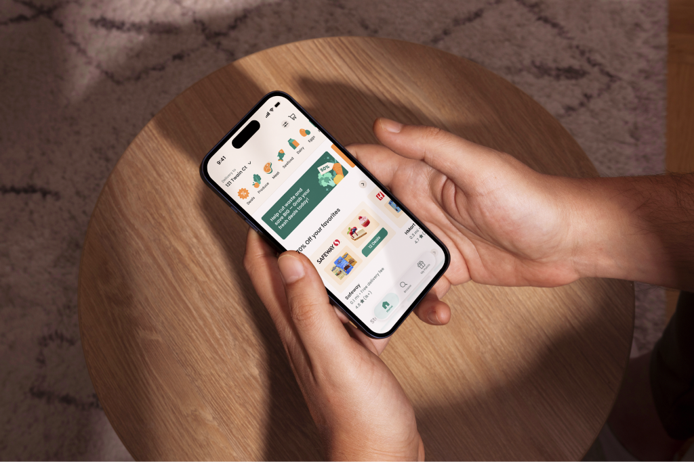

- Role
- Product designer
- Platform
- Mobile app
- Year
- 2025
Savey is a grocery app that helps people save money while reducing food waste by offering near-expiry and imperfect food at lower prices. The goal was to make sustainable shopping more accessible, affordable, and appealing by creating an experience that makes shoppers feel confident about rescuing imperfect food.
The food nobody wanted to buy
A trip to Indonesia showed me stores selling imperfect food at 70% off. Back in the U.S., grocery stores throw away 6 million tons of unsold food every year, and most of it is still good.
6 Million tons
of unsold food
Overstocking
Near-expiry
Imperfect look
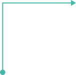
Value vs trust
Most shoppers want a deal, and 72% say they’re willing to buy discounted food. But wanting to save and feeling safe doing it are two different things. But Some Shoppers Hesitate, Why?
60%
of people
aren’t aware of their store’s food waste efforts
20%
of people
avoid near-expiry deals due to freshness concerns
Imperfect = unsafe?
a stigma as unsafe/ low-quality food
Who am I designing for?
Lucy wants diet filters. Jeff wants safety without juggling apps. Both want to save and waste less.
Lucy Kim. 33 married, no kids.
“I’m open to discounted or mystery boxes as long as I can filter by diet and track what I buy so nothing goes to waste.”
Jeff Herrera. 48 married, 1 daughter.
“It’s frustrating that stores throw out food that’s still fine. I’d buy it discounted, but I don’t want to juggle multiple apps.”
Pain Points:
Labels are unclear, lack diet filters
Goals:
Save money and reduce waste without risking freshness/ safety
So, I asked:
how might we make it simple and appealing to buy discounted food with confidence?

When testing changed everything...
Testing showed my favorite feature, Shop Bundle, was confusing, so I cut it. Simplifying made room for what users actually needed: dietary preferences, so they could trust what they buy.
Before
Confusing & hard to use
Discover
Shop Bundle
Earn & Redeem
Shop and rescue food
Share bulk items with others
Reward system after shopping
Cutting my own feature was the best design decision I made.
After
Trust in every bite, rewards in every rescue
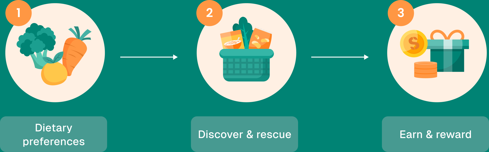
Solving visibility at the start
Trust starts before the first purchase. At onboarding, users set their allergies, dietary restrictions, and foods they’d like to skip, so every deal that follows is personalized. This answered Lucy’s need for diet filters.
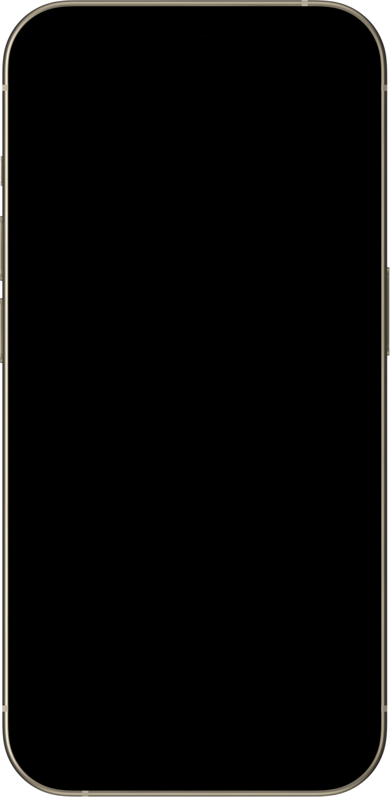
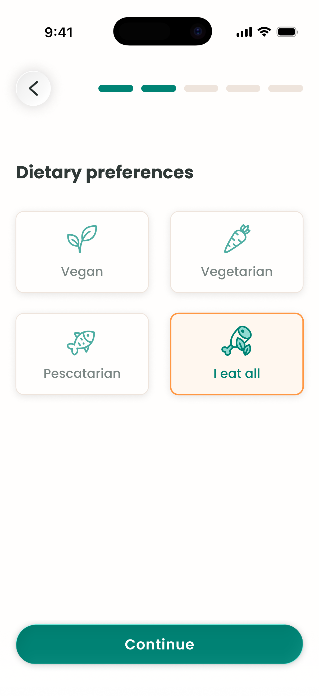
Dietary preferences
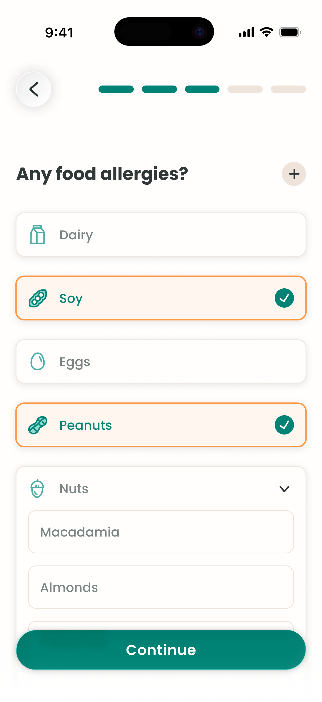
Food Allergies
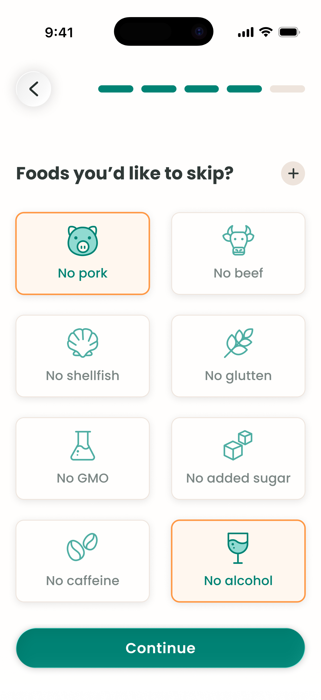
Food to skip
Every details build trust
Every deal shows what shoppers need to feel safe: a clear best-by date, a product condition note (“box is mildly bent, product inside unaffected”), a verified label, and community reviews. This closes the trust gap, so rescued food feels like a smart choice and not a risky one.
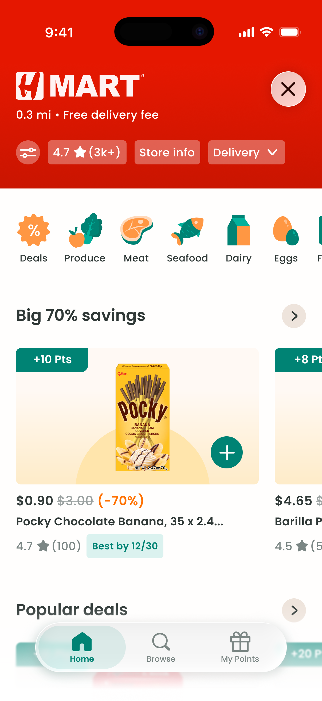
Discover items
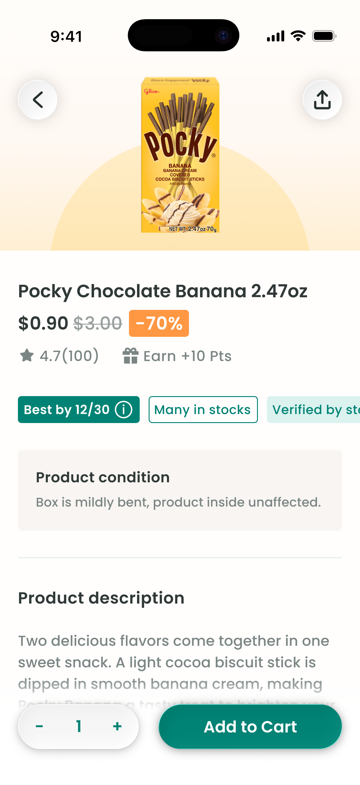
View item details
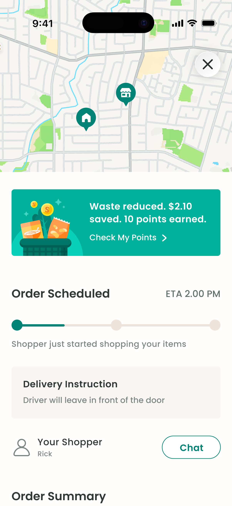
Order placeed
Earn rewards for rescuing food
Every rescue earns points that turn into rewards, and an impact dashboard shows foods rescued and money saved. I trimmed the earning flow so it no longer repeats the discovery steps.
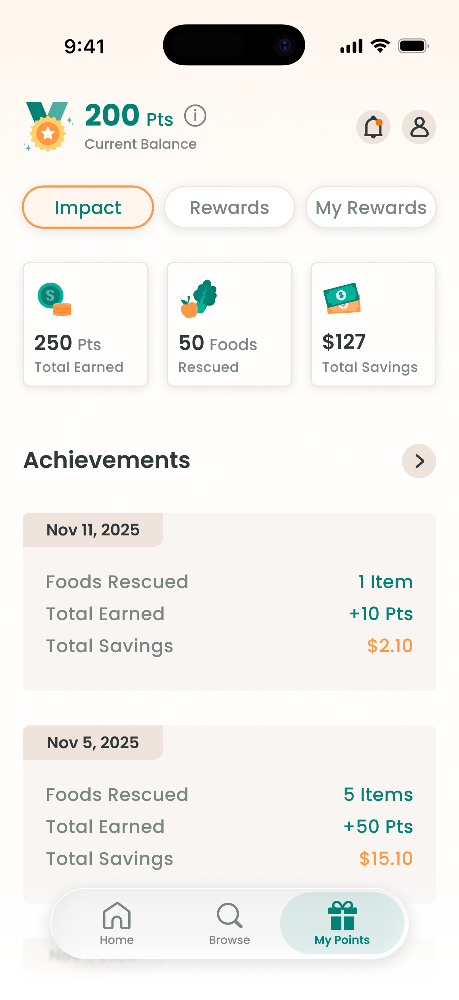
Earning page
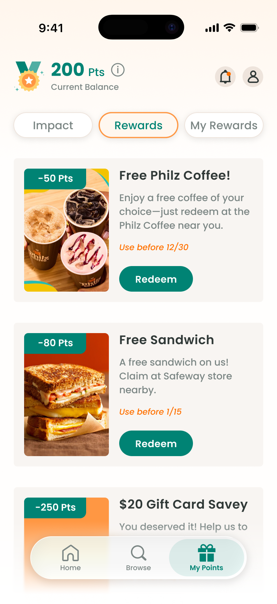
Rewards page
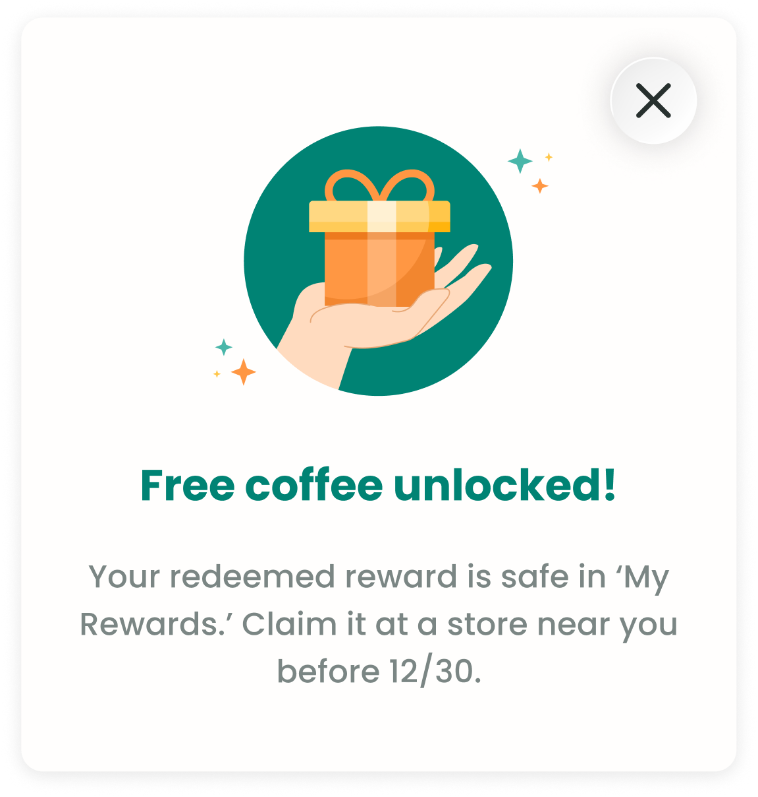
Reward unlocked
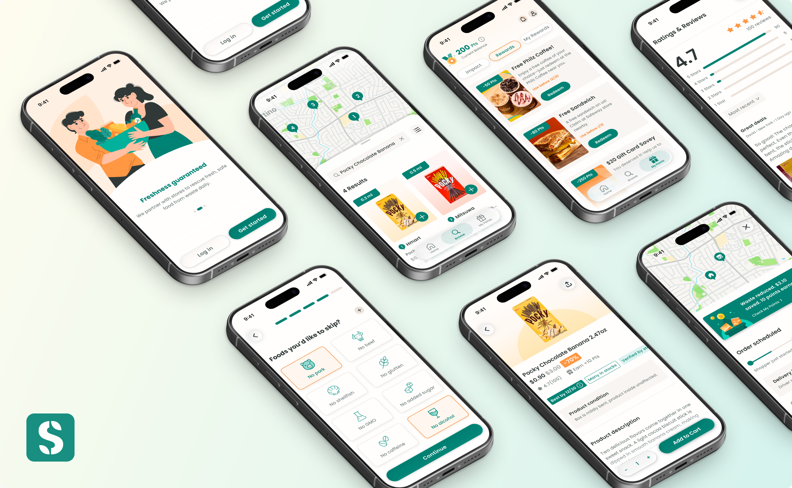
Trust Turned “Imperfect” Into “Worth It”.
In testing, users found the new flow simpler and clearer. Reviews, best-by labels, and product details built trust, and dietary preferences made them feel confident. Their feedback captured it best.
Nanda, Pinky, Jesslyn
”A little imperfect is okay — as long as it’s still good to eat, it helps save money, reduce waste, and support the environment.”
Salo, Eddie, John
“Rescue food and earn rewards, the details and reviews give me confidence.”
What Savey thought me
Building Savey changed how I think about designing for trust. Four lessons stayed with me.
Trust is everythingClear labels, reviews, and product details are essential for buying near-expiry food.
Personalization mattersDietary preferences and favorite foods make discovery easier and more confident.
Simplicity winsUsers prefer simple flows over complex features like sharing bundles.
Sustainability & rewardsSaving food and earning rewards keeps users engaged and motivated.